Official
Edgar Rice Burroughs Tribute and Weekly Webzine Site
Since
1996 ~ Over 10,000 Webpages in Archive
Volume
0830
Presents
RUSS MANNING TRIBUTE I

Russell (Russ) George Manning
(1929-1981)
Part
II in ERBzine 847 features the Manning Bibliography & Galleries
|
Russell George Manning was a southern California native
- born in Van Nuys and raised in Orcutt, a small town near Santa Maria.
His father, George Manning, was a Canadian citizen who had migrated to
California where he worked at a multitude of jobs during his short life.
George died when Russ was 13, leaving wife Opal and their three children:
Russ, his brother, Lee and sister, Pat.
Russ started drawing at an early age and his early influences were
the Tarzan novels with their St. John art and the Tarzan strips of Foster
and Hogarth. Actually his first exposure to Tarzan was through the Big
Little Book, The Beasts of Tarzan. Soon he had read all the Tarzan novels
in the county library, discovered Hogarth's Tarzan in the Sunday LA Times,
and had sat through Tarzan of the movies. These early influences led him
to science fiction and he became a voracious reader and sketcher, to the
extent that he earned the nickname "Moon Boy" in high school. Russ's first
art "sale" came out of a high school contest in which he won $100 for designing
a "bus of the future."
After graduating from Santa Maria High School in 1946, he entered
Santa Monica Junior College where he studied art and literature for a year.
He then enrolled in Los Angeles County Art Institute. It was at this time
that he began his art career as a fanzine artist and worked part time with
a film company. In the fall of 1947 he joined a fan organization known
as N3F - National Fantasy Fan Federation. One of the fellow fans he corresponded
with at this time was Vern Coriell who had recently published his first
issue of the Burroughs Bulletin in July, 1947. His art appeared in a multitude
of fanzines and he even went on to publish his own fanzine. In May,
1948, Russ and female fantasy artist friend, Jerri Bullock, produced the
first issue of a new fanzine, Fan Artisan. In a self-portrait bio he listed
Henry Kuttner, C.L. Moore, and Ray Bradbury among his favourite authors.
His favourite artists included Lawrence Sternne Stevens, Edd Cartier, and
Robert Gibson Jones of Amazing Stories and Fantasy Adventure magazines.
The fanzine had no cover art but Russ contributed eight interior illustrations.
In 1950 he drew some sample pages for a John Carter of Mars comic
for a proposed Dell comic, but his National Guard unit was activated because
of the Korean War and Russ was shipped to Japan before he could submit
them. While overseas with the U.S. armed forces he was assigned work as
a map-maker and base newspaper cartoonist. By the time he was discharged
in 1952, the John Carter project had been assigned to his friend Jesse
Marsh who had been working on the Dell Tarzan comics.
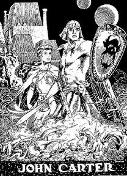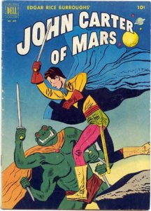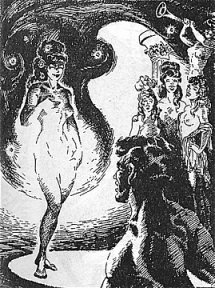
In 1952, Marsh helped get him a job with the Los Angeles
office of Western Publishing (Dell, later Gold Key Comics). Actually before
this he had been turned down three times in six months by Dell's West coast
art director, Tom McKimson. Manning's first published work was Brothers
of the Spear series in Tarzan #39 (December 1952), beginning a long
run through #156 (Feb. 1966) as a supplement to Marsh's work on Tarzan.
Manning's first two Tarzan stories appeared in Western's give-away "March
of Comics" #114 (1954) and #144 (1956). Curiously, "Tarzan and the Horns
of Kudu" which appeared in the #114 issue had been drawn two years earlier
as for a Tarzan 3-D comic that had been shelved.
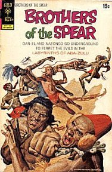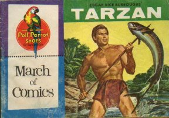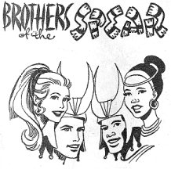
Russ went on to spend the first decade of his career in
anonymity doing a variety of marvelous work on the entire line of Dell
comics (including Disney titles): Johnny Mack Brown, Rex Allen,
Annie Oakley, Range Rider, Walt Disney's Rob Roy, Hayley Mills,
Roy Rogers, Dale Evans, Ben-Hur, Rex Allen, Sea Hunt, Wyatt Earp, Ricky
Nelson, 77 Sunset Strip, and other projects such as Drag Cartoons,
educational filmstrips, Whitman coloring books, a Robin Hood Flour give-away
comic (Robin Hood and the Ghosts of Waylea Castle) and a Big-Little-Book,
The
Buccaneers, based on the Robert Shaw TV series. When the strict Comics
Code Authority (1954) brought about a slump in the comic book industry
for several years, Dell's more "wholesome" line continued to sell well
and provided Manning with all the work he could handle. (Other possibles:
Gene
Autry, Buck Jones, Jesse James, Davy Crockett)
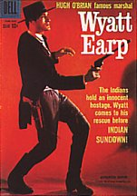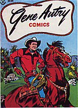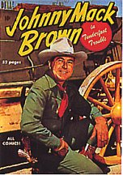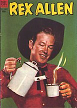
Despite the career successes, one major disappointment was
missing out on a chance to work as an assistant to his idol, Hal Foster.
He got around the Dell policy of not allowing artists to sign their work
by scattering his name and those of family members all through his work
on buildings, signs, text, etc. Even Vern Coriell's name appeared numerous
times in this fashion. Many fans make a game out of searching out these
"hidden" names. However, Russ Manning's personality, unique art style,
writing abilities, prolific output, and the development of modern comic
fandom eventually garnered him the recognition he deserved. He once commented
that the only story teller he considered better than himself was Hal Foster.
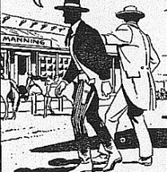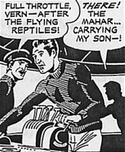
Russ and his artist wife Doris (nicknamed Doe or Dodie) were married
in 1959 and spent their lives together in their home in Modjeska Canyon,
Orange County. Their first child, Melissa, was born in 1961 and son Roger,
in 1966. By all reports, Russ was an excellent husband and father spending
much of his time at home since he did his work in a home studio building
just a few feet away from the main house. His free time interests involved
making home movies, gardening, reading and involvement in civic affairs,
including his role as a volunteer with the Modjeska Canyon Fire Department.
He took his work very seriously and was extremely proud of his creations.
The main tools of his craft included drawing boards, pencils, India inks,
brushes, white correcting ink, and coloured pencils for the Sunday colour
strip. Although he often had assistants who worked as inkers he always
personally inked the Tarzan figures and heads. He had an enormous
respect for the history and tradition of comics and was a great fan of
the greats such as Foster, Hogarth and Kurtzman.
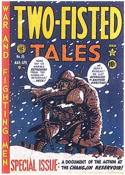
In 1963 he finally had a chance to display his abilities in the science
fiction genre when he created the very popular Magnus, Robot Fighter
4000 A.D., a worthy successor to the Alex Raymond school of realistic
science fiction art. When Magnus #1 (February1963) appeared, most comic
book fans had never seen the remarkably imaginative fine-line work of Alex
Raymond, who died in 1956 and last worked on Flash Gordon in 1944. Nor
had the fans seen the crisp work of Mac Raboy, who labored on Captain
Marvel Junior and Flash Gordon in the 1940s. For fans of realistic
fantasy art, Manning became perhaps as beloved in his day as Raymond and
Raboy were in theirs. Manning drew the first 21 issues of Magnus (often
with the help of Mike Royer) and also wrote several issues, true to his
love of doing a complete work. Manning called Magnus his "Tarzan
of the future."
Russ was assigned another title for Dell in 1963: Korak,
Son of Tarzan. The writer of this series was longtime Tarzan comics
and Brothers of the
Spear script writer, Gaylord DuBois
Manning took over the Tarzan comic from the ailing Jesse Marsh in
1965 and used the opportunity to create faithful graphic adaptations of
the first ten Burroughs Tarzan novels (assisted by writer Gaylord DuBois).
Dark Horse has reprinted the first seven novels from this Gold Key series
in three volumes of graphic novels: Tarzan of the Apes, Tarzan
and Jewels of Opar, and Tarzan the Untamed.
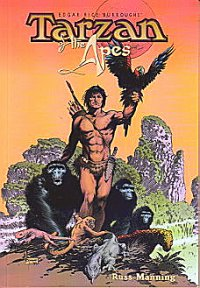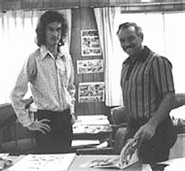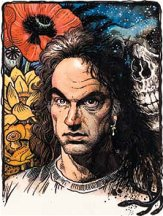
In 1967 he was chosen by Robert Hodes of ERB, Inc. to do the daily
and SundayTarzan strips for United Feature Syndicate. The strips had drifted
far from the Burroughs vision and Russ was committed to bring the strip
much closer to the style of the original Tarzan novels. Each week he wrote
and illustrated -- with the assistance of artist Bill Stout -- the large
colour Sunday page and six daily strips. His illustration and writing abilities
brought a quality and accuracy to the strip that had not been seen since
the days of Foster and Hogarth in the '30s and '40s. Throughout its run
Manning wrote 26 original Sunday stories and seven daily stories which
transported readers to Pal-ul-don, Opar and Pellucidar. The inspiration
for this gorgeous strip, which he wrote, drew and coloured, was the Tarzan
that Burroughs had defined in the first dozen Tarzan novels.
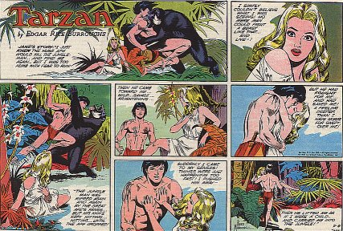
Meeting a daily newspaper deadline for so many years was a monumental
task. The large colourful Sunday strip was particularly demanding as it
had to be presented in three different formats: half-page, one third-page
with fewer panels, and tabloid size. Manning was a voracious reader and
he drew upon a wide range of adventure and science fiction stories for
ideas for his Tarzan stories, which ran in length from one strip to as
long as six months. He used all the well-known characters from the Burroughs
novels but went on to created many new original characters - the most popular
probably being Joiper the tough, irrascible little ant man warrior. Although
his work was praised by everyone who had an interest in adventure strips,
the Tarzan feature eventually died because of serious behind-the-scenes
business
wranglings.
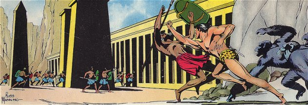
In 1972, Russ Manning left the Tarzan daily strip to concentrate on
other projects which included the writing and illustrating of ERB, Inc's
own Tarzan comics for the European market. Two of these stories have been
collated by Dark Horse and published as "Tarzan in the Land that Time Forgot"
(winner of the 1999 Eisner Award) with "The Pool of Time." Other stories,
such as "Tarzan and the Beastmaster" and "Tarzan in Savage Pellucidar,"
so far have seen publication only in Europe where they appeared in a unique
46-page album format.
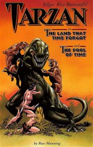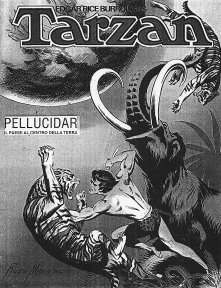
In 1968 Manning, in a joint venture with Frank Frazetta, illustrated
the promotional posters for the Italian-made film, Luana, starring
Mei Chen as a Tarzan-like jungle girl. He also produced a series of daily
Luana strips in connection with the movie. Around this time he worked on
advertising art for numerous other B-list movies produced by overseas film
companies.
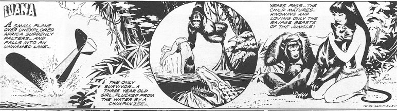
VIEW
A VIDEO CLIP OF THE MOVIE
Alternate
YouTube Location
A few years before his death, Manning was commissioned by George
Lucas to write and draw the Star Wars comic strip from 1979-1980. His talents
were stretched to the limit during much of this period as he also was still
doing the Tarzan Sunday pages until Gil Kane was signed on to take over.
This then made it possible for Russ to devote all his time to the Star
Wars projects, which included the Dark Horse Comics adaptations. This artwork
was recently colored, reformatted, and retouched by Rick Hoberg, who worked
with Manning on the original newspaper strips. It was then released by
Dark Horse as Classic Star Wars: The Early Adventures.
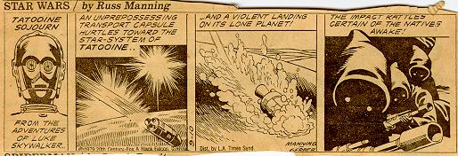
Russ's work on Star Wars was brought to a disappointing halt when he
was diagnosed with cancer and was forced to turn the project over to Al
Williamson. He spent his final year battling the disease and experimenting
with a variety of leisurely paced art pursuits for his own enjoyment and
relaxation. Russ Manning died at the Long beach Veteran's Hospital on December
1, 1981. He was 52.
Many modern Tarzan enthusiasts rank Manning with Burne Hogarth and
Hal Foster in the pantheon of great Tarzan artists. In addition to
this, his comic book and newspaper scripts were some of the finest in the
field. He left a wonderful body of work that many fans, new and old, are
constantly rediscovering and coming to appreciate. Unfortunately very little
of his original art remains from the Dell Comics period of work as Western
Publishing's policy was to destroy all their artists original
work. Luckily, much of the original art from the Tarzan newspaper strips
is still stored in the ERB, Inc. files. Perhaps someday Russ Manning's
work will be available at art
auctions for collectors and fans of the artist and the characters that
he presented so well.
Russ Manning was the recipient of many awards during his lifetime
and posthumous accolates are still being bestowed upon him. The Atlas
Comics Web site have included him among the top 100 comic book artists
of all time. The San Diego Comic Con presents the highly coveted "Russ
Manning Award" to the most outstanding new artist each year.
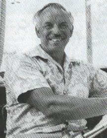
RUSS MANNING TRIBUTE
|
1. Illustrated
Biography
|
2. Illustrated
Bibliography
|
3. Russ
Manning Portfolio Eclectica
|
4. Illustrated
Career Timeline I
|
|
5. Illustrated
Career Timeline II
|
6. Illustrated
Career Timeline III
|
7. Russ
Manning The Writer
|
8. Russ
Manning Speaks
|
|
TARZAN/KORAK
|
SUNDAY PAGES
|
RUSS MANNING
|
STORY & ART
|
ERBzine
1760
Jan
14 '68 - June 16 '68
Tarzan
& Ant Men
|
ERBzine
1761
June
23 '68 - Jan 5 '69
Tarzan
& Dagga Ramba
|
ERBzine
1762
Jan
12 '69 - May 11 '69
Korak/Elephant
Girls - Tembo-Haven
|
ERBzine
1763
May
18 '69 - Nov 30 '69
White
Hunter Safari to Opar
|
ERBzine
1764
Dec
7 '69 - Feb 8 '70
Tarzan
Meets Jane
|
ERBzine
2138
Feb
15 '70 - May 31 '70
Korak
& River of Time
|
ERBzine
2124
June
7 '70 - Nov 8 '70
Slave
Traders
|
ERBzine
2125
Nov
15 '71 - Jan 17 '71
D'Arnot
Meets Tarzan
|
ERBzine
2126
Jan
24 '71 - Feb 14 '71
Jad-Bal-Ja
& the Apes
|
ERBzine
1765
Feb
21 '71 - Apr 2 '72
Tarzan
& Jane in Pal-Ul-Don I
|
ERBzine
1792
Feb
21 '71 - Apr 2 '72
Tarzan
& Jane in Pal-Ul-Don II
|
ERBzine
1790
Apr
9 '72 - Sep 17 '72
Korak
and the City of Xuja
|
ERBzine
2127
Sept
24 '72 - Oct 21 '73
Tarzan
in Pal-Ul-Don I
|
ERBzine
2128
Sept
24 '72 - Oct 21 '73
Tarzan
in Pal-Ul-Don II
|
ERBzine
2129
Sept
24 '72 - Oct 21 '73
Tarzan
in Pal-Ul-Don III
|
ERBzine 2130
Oct 28 '73 - Mar 17 '74
Korak & the Igotha
|
ERBzine 1791
Mar 24 '74 -Nov 3 '74
Return/Castra Sanguinarius
|
ERBzine
2131
Nov.
10, 1974 - Feb. 9, 1975
Tarzan
& Valley of the Mist
|
ERBzine 2132
Feb. 16, 1975 - Aug. 10, 1975
Korak: Amazons/Graveyard
|
ERBzine 2133
Aug. 17, 1975 - Aug. 22, 1976
Valley Insects/Return Opar
|
ERBzine 2134
Aug. 29, 1976 - Dec. 26, 1976
Tarzan: Farmers/Settlers
|
ERBzine 2135
Jan. 2, 1977 - Aug. 21, 1977
Tarzan: Jungle Revolution
|
ERBzine 2136
Aug. 28, 1977 - Jan. 29, 1978
Sacred Lake/Squid God
|
ERBzine 2137
Feb. 05, 1978 - Feb. 4, 1979
Dead Moon of Pellucidar
|
Tarzan and the Games
of Ibizzia (Royer ink) ~ Feb. 04, 1979 - June 24, 1979
Volume
0830
WEBJED:
BILL HILLMAN
Visit
our thousands of other sites at:
BILL
& SUE-ON HILLMAN ECLECTIC STUDIO
All
ERB Images© and Tarzan® are Copyright ERB, Inc.- All Rights Reserved.
All
Original Work © 1996-2002/2004/2009 by Bill Hillman and/or Contributing
Authors/Owners